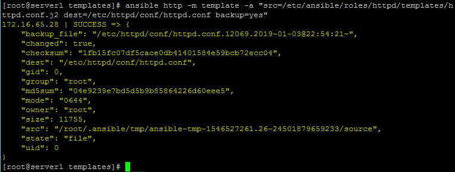
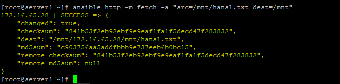
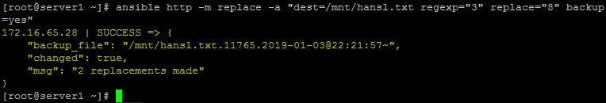
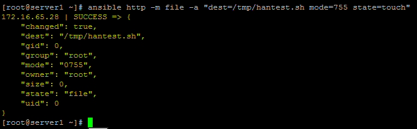
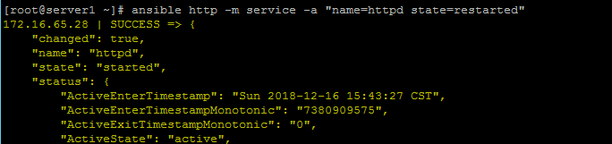
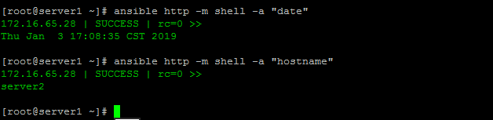
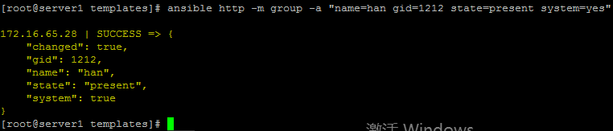
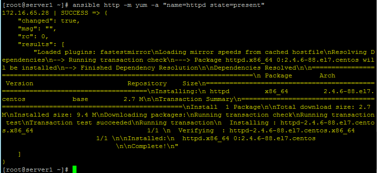
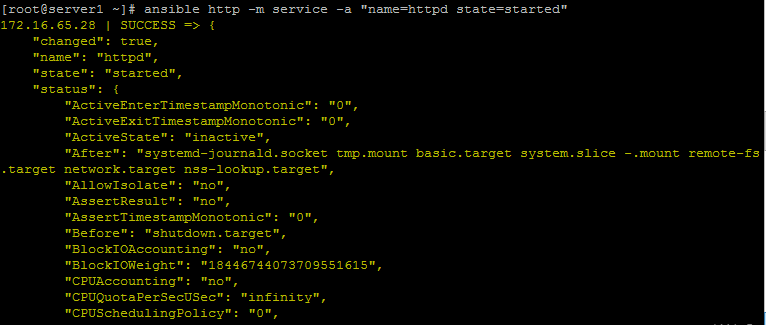
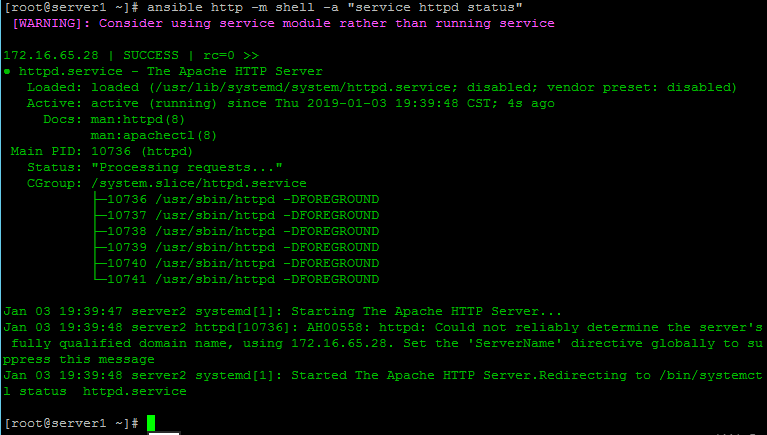

Ansible常用模块
[ansible]
这里主要记录一下常规的ansible命令
ansible的安装可以使用命令：yum install ansible -y
ansible的配置文件：
这里默认使用了all作为ansible命令的组，实际使用中，可以自己根据实际需求在文件/etc/ansible/host中添加主机组。 这里要注意的是被控制的主机需要添加ansible服务器的公钥，确保ssh能够没有密码就能够访问被控制的主机。
要使ansible的服务无密码访问被控制的主机还需将ansible主机的公钥加到被控制主机的authorized_key中。
ansible模块有很多，具体模块的使用方法可以使用 ansible-doc 命令可以详细的查看
例如：[root@server1 ~]# ansible-doc service # 查看模块 service 的使用方法
ansible命令通常由以下格式组成：
ansible <ansible.client> -m <module> -a <args>
其中<ansible.client>可以是配置文件中的服务器组名，ip，域名等一切能表达主机的名称。
<args>
[-k] //每次都要询问密码
[-u <username>] [--sudo] //以<username>的身份运行，再加--sudo获取root权限
-m的<module>:
command模块:
chdir：在运行命令之前，切换到此目录。
ansible <ansible.client> -m command -a "<command>"
//远程发送命令

template模块:
ansible <ansible.client> -m template -a "src=</path/to/localfile> dest=</path/to/remotefile>"
backup： 如果原目标文件存在，则先备份目标文件
src：在ansible控制器上的Jinja2格式化模板的路径。 这可以是相对或绝对的路径。
dest：将模板渲染到远程机器上的位置。
owner：目标文件属主
group：目标文件属组
force:是否强制覆盖yes
mode:目标文件的权限模式，模式可以被指定为符号模式（例如，u + rwx或u = rw，g = r，o = r）。

copy模块:
src：要复制到远程主机的文件在本地的地址，可以是绝对路径，也可以是相对路径。如果路径是一个目录，它将递归复制。在这种情况下，如果路径使用”/”来结尾，则只复制目录里的内容，如果没有使用”/”来结尾，则包含目录在内的整个内容全部复制，类似于rsync。
content：用于替代”src”,可以直接设定指定文件的值
dest：必选项。要将源文件复制到的远程主机的绝对路径，如果源文件是一个目录，那么该路径也必须是个目录
directory_mode：递归的设定目录的权限，默认为系统默认权限
force：如果目标主机包含该文件，但内容不同，如果设置为yes，则强制覆盖，如果为no，则只有当目标主机的目标位置不存在该文件时，才复制。默认为yes
ansible <ansible.client> -m copy -a "src=</path/to/localfile> dest=</path/to/remotefile>"
//远程传文件

fetch模块:
它用于从远程机器获取文件，并将其本地存储在由主机名组织的文件树中。
src：远程系统上要获取的文件。 这必须是一个文件，而不是一个目录。 后续版本可能会支持递归提取。
dest：保存文件的目录。 例如，如果dest目录是/backup，在主机host.example.com上命名为/ etc/profile的src文件将被保存到 /backup/host.example.com/etc/profile。
flat：允许您覆盖将目标文件添加到主机名/ path / to / file的默认行为。
ansible <ansible.client> -m fetch -a "src=</path/to/localfile> dest=</path/to/remotefile>"
//远程文件复制到本地

replace模块:
ansible <ansible.client> -m replace -a "dest=</path/to/remotefile> regexp='Old' replace='New' backeup=yes"

file模块:
file模块主要用于远程主机上的文件操作，file模块包含如下选项：
force：需要在两种情况下强制创建软链接，一种是源文件不存在但之后会建立的情况下；另一种是目标软链接已存在,需要先取消之前的软链，然后创 建新的软链，有两个选项：yes|no
group：定义文件/目录的属组
mode：定义文件/目录的权限
owner：定义文件/目录的属主
path：必选项，定义文件/目录的路径
recurse：递归的设置文件的属性，只对目录有效
src：要被链接的源文件的路径，只应用于state=link的情况
dest：被链接到的路径，只应用于state=link的情况
state：
directory：如果目录不存在，创建目录
file：即使文件不存在，也不会被创建
link：创建软链接
hard：创建硬链接
touch：如果文件不存在，则会创建一个新的文件，如果文件或目录已存在，则更新其最后修改时间
absent：删除目录、文件或者取消链接文件
ansible <ansible.client> -m file -a "dest=</path/to/remotefile> mode=<chmod.mun> [owner=<username>] [group= <group>]"
//远程创建文件，可以设置文件的权限与用户名
//第一次生成文件要state=touch

ansible <ansible.client> -m file -a "dest=</path/to/remotedir> mode=<chmod.num> state=directory"
//远程创建文件夹

ansible <ansible.client> -m file -a "dest=</path/to/remotefile> state=absent"
//远程删除文件

ping模块:
ansible <ansible.client> -m ping
//ping所有<ansible.client>的主机，查看ansible服务器和被控制主机的网络是否通。

service模块:
用于管理服务，记得针对Centos7就不要使用这个模块了。
arguments：给命令行提供一些选项
enabled：是否开机启动 yes|no, 要求状态（state）和启用（enabled）中至少有一个。
name：必选项，服务名称
runlevel：运行级别
sleep：如果执行了restarted，在则stop和start之间沉睡几秒钟
state：对当前服务执行启动，停止、重启、重新加载等操作（started,stopped,restarted,reloaded）
ansible <ansible.client> -m service -a "name=<service.name> state={started|restarted|stoped}"
//修改服务的状态


shell模块:
chdir：在运行命令之前，切换到此目录。
executable：更改用于执行命令的shell（bash，sh）。 应该是可执行文件的绝对路径。
ansible <ansible.client> -m shell -a '<command>'
//向远程主机发送命令

user模块:
home：指定用户的家目录，需要与createhome配合使用。
groups：指定用户的属组。
uid：指定用的uid。
password：指定用户的密码。
name：指定用户名。
createhome：是否创建家目录 yes|no。
system：是否为系统用户。
remove：当state=absent时，remove=yes则表示连同家目录一起删除，等价于userdel -r。
state：是创建还是删除。（present，absent）
shell：指定用户的shell环境。
generate_ssh_key：是否为相关用户生成SSH密钥。 这不会覆盖现有的SSH密钥。
ssh_key_bits：可选择指定要创建的SSH密钥中的位数。
ssh_key_passphrase：设置SSH密钥的密码。 如果没有提供密码，SSH密钥将默认没有密码。
ssh_key_file：指定SSH密钥文件名（可选）。 如果这是一个相对的文件名，那么它将是相对于用户的主目录。
ssh_key_type：指定要生成的SSH密钥的类型（可选）。 可用的SSH密钥类型将取决于目标主机上的实现。
ansible <ansible.client> -m user -a "name=<username> [passwd=<crypted.passwd>]"
//添加一个用户
此处的密码创建无效，详情请查看ansible用户创建及密码

根据实际情况，密码这个项最好是先在一台主机上建一个密码，然后在/etc/shadow里提取。而且某些系统中密码是包含特殊字符$，所以密码要用单 引号扩起来而$前要用\符号转译。
group模块
gid：指定用的gid。
name：指定用户名。
state：是创建还是删除。（present，absent）
system：如果是，则表示创建的组是系统组。

get_url 模块:
该模块主要用于从http、ftp、https服务器上下载文件（类似于wget），主要有如下选项：
sha256sum：下载完成后进行sha256 check；
timeout：下载超时时间，默认10s
url：下载的URL
url_password、url_username：主要用于需要用户名密码进行验证的情况
dest：将文件下载到哪里的绝对路径。如果dest是目录，则使用服务器提供的文件名，或者如果没有提供，将使用远程服务器上的URL的基本名称。
headers：以格式“key：value，key：value”为请求添加自定义HTTP标头。
yum模块:
这个模块是RedHat / CentOS作为远端节点的OS的时候，用的最多的。Yum是啥就不多说了，RedHat / CentOS包管理工具 使用`yum’软件包管理器管理软件包，其选项有：
config_file：yum的配置文件 （optional）
disable_gpg_check：关闭gpg_check （optional）
disablerepo：不启用某个源 （optional）
enablerepo：启用某个源（optional）
name：要进行操作的软件包的名字，默认最新的程序包，指明要安装的程序包，可以带上版本号，也可以传递一个url或者一个本地的rpm包的路径
state：状态（present，absent，latest），表示是安装还卸载
present:默认的，表示为安装
lastest: 安装为最新的版本
absent：表示删除
ansible <ansible.client> -m yum -a "name=<software.name> state=present"
//直接安装指定软件，如果已安装则查看版本信息。



unarchive模块
用于解压文件，模块包含如下选项：
copy：在解压文件之前，是否先将文件复制到远程主机，默认为yes。若为no，则要求目标主机上压缩包必须存在。
creates：指定一个文件名，当该文件存在时，则解压指令不执行
dest：远程主机上的一个路径，即文件解压的绝对路径。
group：解压后的目录或文件的属组
list_files：如果为yes，则会列出压缩包里的文件，默认为no，2.0版本新增的选项
mode：解压后文件的权限
src：如果copy为yes，则需要指定压缩文件的源路径
owner：解压后文件或目录的属主
unarchive模块
setup模块，主要用于获取主机信息，在playbooks里经常会用到的一个参数gather_facts就与该模块相关。
setup模块下经常使用的一个参数是filter参数，具体使用示例如下（由于输出结果较多，这里只列命令不写结果）：
//查看主机内存
[root@361way ~]# ansible 10.212.52.252 -m setup -a 'filter=ansible_*_mb'
//查看地接口为eth0-2的网卡信息
[root@361way ~]# ansible 10.212.52.252 -m setup -a 'filter=ansible_eth[0-2]'
//将所有主机的信息输入到/tmp/facts目录下，每台主机的信息输入到主机名文件中（/etc/ansible/hosts里的主机名）
[root@361way ~]# ansible all -m setup --tree /tmp/facts